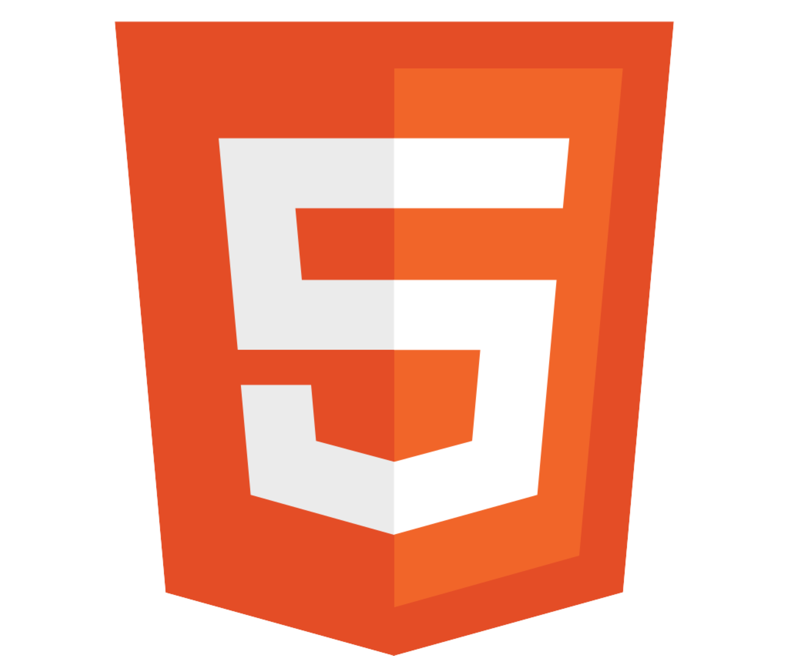
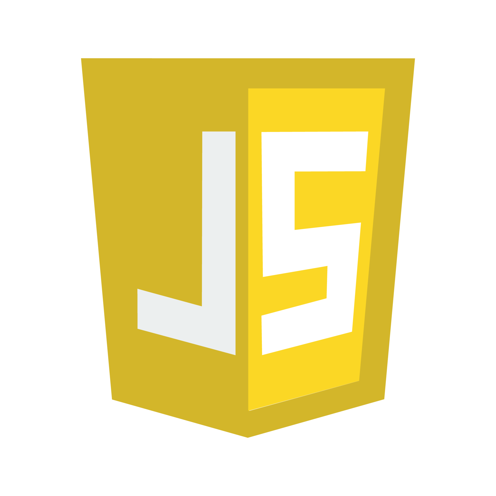
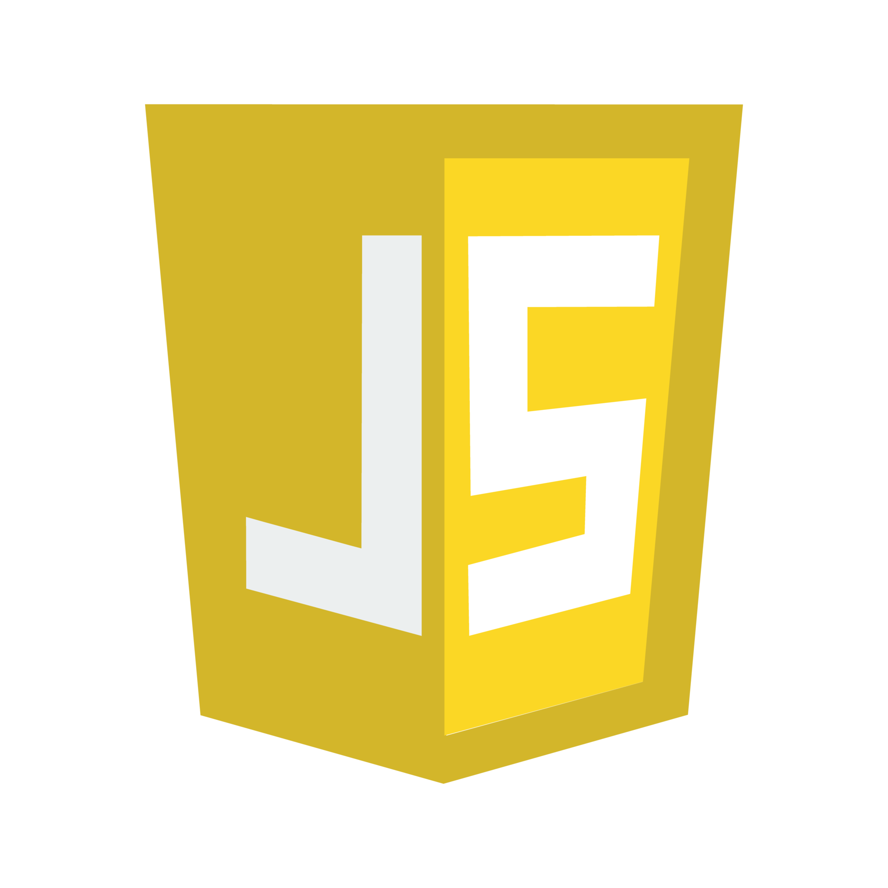
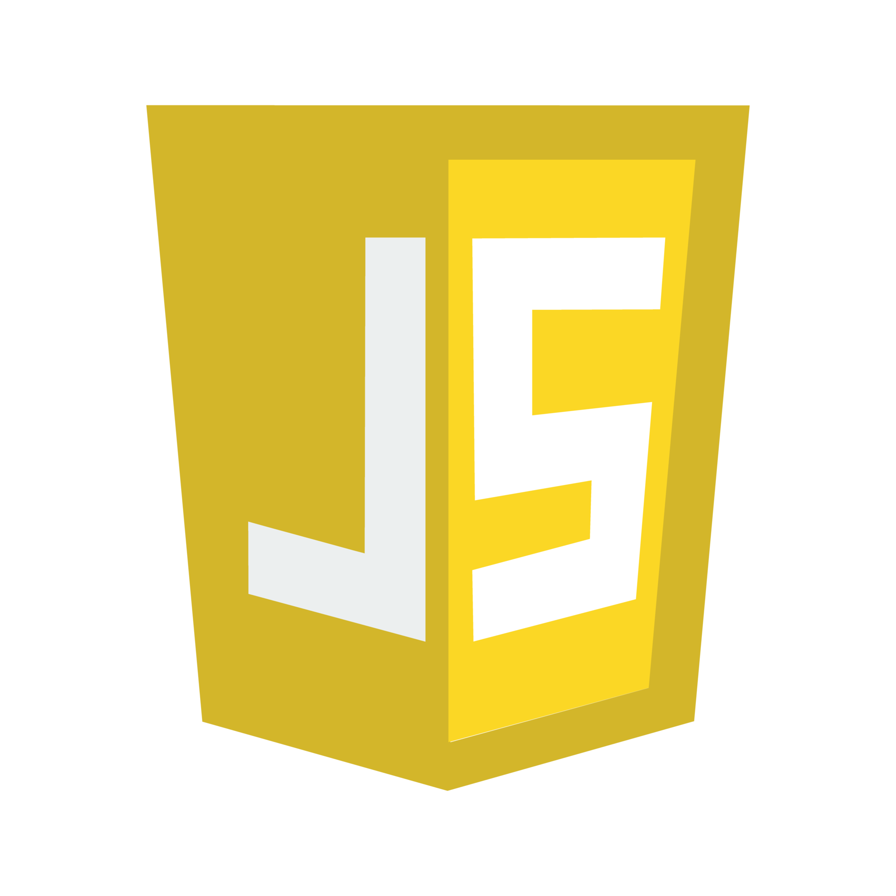
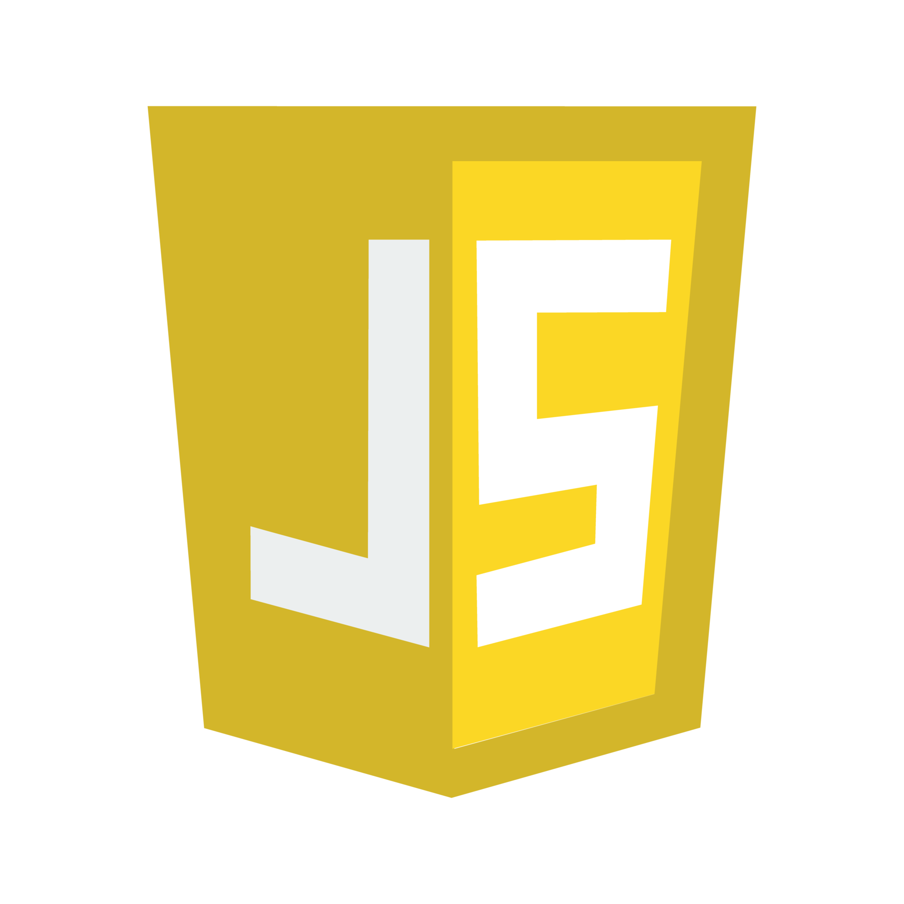

 





Hello!
a Front-End Web Developer
Passionate Computer Science student with a love for coding and continuous learning.
Online Accounts Recovery
Through extensive experience assisting with online account recovery, I've gained valuable insights into support systems and user security. This knowledge has enhanced my problem-solving skills and helped me develop more secure, user-focused applications as a programmer.
Lebanese University
Continuing my studies at the Lebanese University, I specialize in Computer Science. This has provided me with extensive new knowledge and skills that I can develop and apply in my future endeavors.
42 Beirut Curriculum
Joining the 42 curriculum has been a transformative journey. This program has provided hands-on experience, allowing me to develop and manage projects practically. The peer-to-peer aid and evaluations have significantly improved my communication and collaboration skills, making me more adept at working in team environments.
